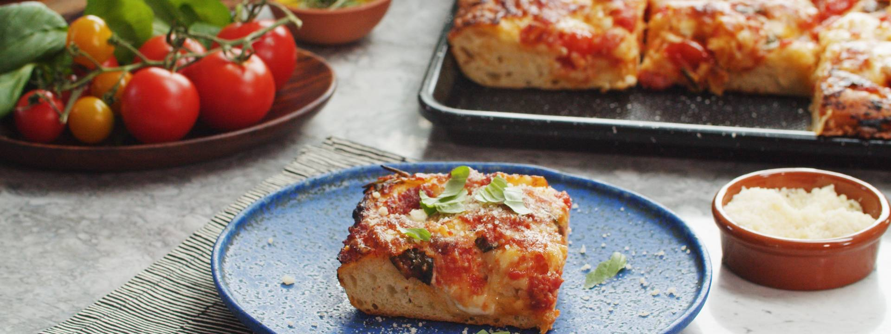

SHEET PAN FOCACCIA PIZZA WITH CRUSHED SAN MARZANOS & MOZZARELLA

Ingredients
Focaccia Dough:
- 1 cup (250g) bread flour
- 1 cup (250g) all-purpose flour
- 1 tablespoon coarse semolina (optional)
- 3½ teaspoons kosher salt
- 1 tablespoon (14g or 2 packages) active dry yeast
- 1⅓ cup (320ml) lukewarm water*
- 2 teaspoons honey
- 3 tablespoons (50ml) extra-virgin olive oil
- Flaky maldon sea salt
- Fresh chopped rosemary or thyme, optional
- Roasted Garlic Butter, optional (recipe in Notes)
Crushed San Marzano Sauce:
- 28-ounce can of whole San Marzano tomatoes, drained
- 2 tablespoons extra-virgin olive oil
- 4 garlic cloves, minced or grated fine
- ½ cup fresh basil leaves (½-ounce clamshell)
- 2 teaspoons balsamic vinegar
- 2 teaspoons balsamic vinegar
- Freshly cracked black pepper
For the Pizza:
- 1 cup grated mozzarella (low-moisture)
- 1 cup grated Asiago or Romano cheese
- ⅓ cup Parmigiano Reggiano
- 1 cup cherry tomatoes
- 4 ounces fresh mozzarella ciliegine or burrata pearls, torn in half
Cooking Instructions
- Prepare Focaccia dough: In a large bowl, whisk together both flours, semolina and salt. Make a well in the middle of the bowl and set aside.
- In a measuring cup or small bowl, bloom yeast by whisking together warm water with yeast until combined and yeast is dissolved. Stir in honey and set aside until frothy and bubbly. Whisk in olive oil and gradually stream into prepared flours. (It’s easiest to mix this together with a fork to start with and then, when it is just coming together, use your hands to make it into a ball.) Tip the dough out onto a lightly floured surface and knead for about 10 minutes until smooth, elastic and springy to touch.
- Oil a large mixing bowl and place the dough inside, cover tightly with plastic wrap and set aside to rise until doubled in size, about 3-4 hours*
- Prepare pizza sauce and toppings: Pour drained San Marzano tomatoes into a bowl along with olive oil, garlic, and balsamic. Tear basil leaves into pieces, adding to bowl, and using your hands, crush tomatoes into small bite-sized pieces. This can be done a few days ahead of time, if needed as tomatoes will marinate for extra flavor. You’ll likely have a bit of sauce leftover, but it will store in an airtight container for up to a week. In a small bowl, mix together grated mozzarella, Romano, and Parmesan for pizza assembly, set aside.
- Preheat oven to425˚F (220˚C) and generously brush a baking sheet or metal baking dish with garlic butter (or substitute olive oil if preferred).
- Spread risen focaccia dough in prepared dish, stretching and pulling dough from underneath to fit baking pan. With greased fingers, poke and prod the dough to stretch to the length of the pan, tapping aggressively as if playing a fake piano.
- Generously brush dough with more garlic butter, making sure to get all the sides which will ensure a crispier crust. Sprinkle with Maldon salt and herbs. Begin layering with pizza ingredients - tucking cherry tomatoes into dough and alternating with torn burrata pearls. Continue layering with sauce and grated cheeses. Bake for 20-25 minutes until golden and bubbly, checking halfway through, reducing oven temperature to 400˚F (63˚C) if cheese browns too quickly.
- Brush with more garlic butter, if desired and garnish with fresh torn basil. Cool slightly before slicing and serving hot.
Recipes Notes:
- For extra flavorful focaccia - after mixing, wrap tightly and let rest in the fridge overnight for 8-24 hours. This method allows the yeast and flour to develop a more sourdough-like flavor as it sits. Next day, punch down dough and allow to rise at room temperature for 3-4 hours until doubled again in size.
- Roasted Garlic Butter: In a small pot combine 2 tablespoons roasted garlic paste (about 6 roasted garlic cloves smashed into a fine paste) and 6 tablespoons salted butter over medium-low heat until bubbly and toasted, about 5-10 minutes.